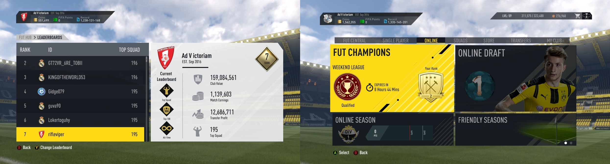

Trivia
Warning: Reading this page is a waste of time! So don't do it unless you have nothing better to do :). (Or if you really want to know more about me.)
In my home page I said I love playing video games. That's probably an understatement. Gaming was a part of my life when I was a student. Back then, I spent 5-7 hours everyday playing all kinds of different games and a few extra hours watching streams. Here is a list of games that I play, you are welcome to discuss them with me. By the way, my internet nickname is usually "rifleviper".
- League of Legends: This is basically my go-to game. I probably spent over 4000 hours in this game. I main support (Sona, Janna, Raka etc). My highest ranks are Diamond 5 in both solo and flex (my peak solo queue ranking is about top 0.8%).
I follow a little bit of the competitive scene and my favorite professional team is CLG.EU in s2. My favorite player has been Uzi since season 3. I also played a little bit of Teamfight Tactics. When ranked TFT first came out, I hit
Platinum in 3 days, which was ~ rank 1800 on NA server at the time. Then I realized that I better spend time preparing for my job market instead of playing games, so that's the end of my climb.

- Diablo 3: Roughly 3000 hours were thrown into this game (trash can). My highest ever standing on the leaderboard was rank 2 monk NA in season 7, and my other peak ladder ranking was: season 2 monk: 113th, season 3 barb: 47th,
seaon 5 crusader: 48th, season 6 witch doctor: 15th, season 10 demon hunter: 24th, all on US server (I main barb and demon hunter). During s3 I was proudly a member of Triumph of Unity clan.

- Playerunknown's Battlegrounds: This is the game where "strategy" actually matters. I mostly play duos with a friend who prefers not to be named (his nickname is "old dog"/"son of chicken"/"green hair turtle"). Although
each of us kill fewer than 1 enemy per game on average, our win ratings are surprisingly high: for example, I peaked at rank 8 (yes I was on the leaderboard) in 2018 Season 1. In other seasons, I was rank 34 in Early Access #1,
rank 47 in Early Access #2, rank 67 in Early Access #5, and rank 19 in Early Access #6. We are not great gunners but we apply game theory to its finest.

- FIFA 17: I played this title of FIFA for over 1300 hours; more than half of the time was spent on the auction house. I was quite successful in flipping items, and as a result I was able to build a beast team that ranked 7th among
all PC players around the world. In terms of gameplay, I am a division 1 player in FUT online seasons, and my highest weekend league finish is gold 2 (14 wins/11 losses, in fact due to time constraints on weekends, I only participated in
two of them).
 - RPG/3A: Skyrim (personal favorite), The Witcher 1-3, Fallout 4, GTA 5, Grim Dawn, Watch Dogs 2, Middle-Earth: Shadow of Mordor, Shadow of War, Assasin's Creed IV: Black Flag, Red Dead Redemption 2, Thronebreaker: The Witcher Tales, Cyberpunk 2077, Diablo 2, Assasin's Creed Odessey, Hogwarts Legacy, Diablo 4, Baldur's Gate 3, Starfield.
- FPS: Call of Duty Modern Warfare 1-3, World at War, Black Ops, Medal of Honor, Rainbow 6: Siege, Borderlands 2, Escape from Tarkov, Alien Shooter. (but no CS:GO aka Cyka Blyat Rush B)
- Soccer games: FIFA 07-11, FIFA Online 2, Football Manager 07-16, 18, 20-21, 23, Rocket League.
- Roguelike/lite: Rogue Legacy, The Binding of Issac, Slay the Spire, Run Zombie Food, Lost Castle, Dead Cells, FTL.
- Sandbox: Ark, Subnautica.
- Management, Simulator and Puzzles: Stardew Valley, Cities: Skylines, Portal, Portal 2, Empire Four Kingdoms, LIMBO, This War of Mine, Fallout: Shelter, Don't Starve Together, Euro Truck Simulator 2, World of Guns, Papers, Please, Darkest Dungeon, Undertale, Plague Inc, Prison Architech, Poly Bridge, Home Behind 2, Trine 4, Oxygen Not Included, Two Point Hospital, Ultimate Fishing Simulator, Ori and the Will of the Wisps.
I would like to give a shout-out to my gaming buddies: Dctorfeelgud, Dessias, Jubite, Francis Parham I and Realfriend. Thanks for "being noobs together" with me.
I also enjoy fishing when I have free time. The biggest fish I have ever caught is a 30 lb black carp in China.
When I was in 9th grade, I studied Go for 2 months. Haven't played much since then but sometimes I watch professionals play. (I do hold an amateur 1-Dan title though.)
I also do street workout. Below is a video of me having some fun. (Again it is painfully slow to load this video in China.)
A Q&A Section just for some lols
Q: What's the language you speak?
A: Authentic Amerikan.
Q: Who is your girl friend?
A: Her name is Geforce GTX 1080 ti and here is a picture of her.
{kind=link}
Q: If you stop playing dem stupid games, maybe you could make enough money to buy a Lamborghini?
A: Well, I already have two. Bought from Amazon and they came with free AA batteries.
Q: How do I post a polite negative review?
A: I am just gonna cite this:
"My Grandfather smoked his whole life. I was about 10 years old when my mother said to him, 'If you ever want to see your grandchildren graduate, you have to stop immediately.' Tears welled up in his eyes when he realized what exactly was at stake. He gave it up immediately. Three years later he died of lung cancer. It was really sad and destroyed me. My mother said to me- 'Don't ever smoke. Please don't put your family through what your Grandfather put us through." I agreed. At 28, I have never touched a cigarette. I must say, I feel a very slight sense of regret for never having done it, because this game gave me cancer anyway."
Q: Any more photos of you?
A: Yeah here is another one.
{kind=link}
Q: Why do you troll me?
A: I never troll.
Oh wait,
I just did.
#trolling since 1969.
Q: Who is your favorite streamer?
A: Goodideagaming. Most optimized stream worldwide NA. (Yes he was perma banned by Twitch... So I have a great taste I guess) When I need to learn something in Diablo 3, I go watch Alkaizer. There is a reason he won "the Most Educational Diablo III Stream in 2014" award! I also liked his chat, it doesn't give me cancer or aids at all. And:
I swear to God I never spammed his channel.
I swear to God I never spammed his channel.
I swear to God I never spammed his channel.
I swear to God I never spammed his channel.
I swear to God I never spammed his channel.
Q: Why are you not a professional gamer?
A: If I didn't choose to get a PhD, Faker wouldn't be the best midlaner in League of Legends. (¬ p ⇒ p → q)
Q: How to be good at games?
A: #Korean Advice: do not suck.
Q: How did you beome a game addict?
A: When I was a freshman (2010), I literally did too good in some classes. (I don't want to brag so I will just leave this sentence here.) So I lost my motivation to study and went to play games all day. My roommate aka Realfriend was playing League of Legends at that time, so I joined him.
Q: (a somewhat serious one) Is "game theory" applicable to video games?
A: To some extent. Maybe some masters in game theory like Ariel Rubinstein would say no. But I disagree. You will not be able to apply theorems directly, but it is the way of thinking that matters. The idea of mixed strategy helps you dodge skillshots; the logic of forward induction/ level-k thinking helps you avoid ganks/ read your opponents; a hardcore belief in rationality and probability should make you rage less. Also, knowledge in optimization greatly improves your efficiency, even though most of the time you only need to know things like how to maximize xy when x+y is fixed or some simple linear approximations. Play smarter not harder.
Q: (an even more serious one) Out of so many research areas you could've chosen, why market design?
A: Three stories:
When I just arrived at Berkeley, I was quite determined to be a mechanical engineer, so I enrolled in a class on Matlab. But right before the first day of class, the discussion session I enrolled in was cancelled. I didn't know about the "Berkeley time" (each class starts 10 minutes late so students have time to travel to different classrooms) then, and I was really having trouble fixing my schedule. Finally I had to take a research class intended for juniors and seniors, named "Combinatorial Game Theory", taught by Dr Daniel Cristofaro-Gardiner. In that class I fell in love with game theory (about the same time with video games), so becoming a mechanical engineer was never considered again.
In my last year at Berkeley, I took a class in matching thoery, taught by Prof Chris Shannon. She left the following problem as homework: Suppose there are n men and n women, mutually acceptable, prove that in the matching produced by the man-proposing algorithm, at most 1 man is matched with his worst choice. (If you understand what I am talking about, you are encouraged to try it out.) This isn't a trivial problem (unlike most other homework problems at Berkeley..). I thought about it for an hour in my mathematical logic class but had no clue how to do it. Finally, when I was standing in a long line waiting for my dinner from Thai Basil, I had an epiphany: Aha, it is so easy, just think about the last round of the algorithm! My interest in market design began! (A few years later, I discovered that, Al Roth already used a similar trick when proving that the man-proposing algorithm is strategy-proof for all men and the outcome of the man-proposing algorithm is weakly pareto optimal among all individually rational matchings, in his 1982 paper "The Economics of Matching: Stability and Incentives." In fact, this exact homework problem was first studied by Itoga (1978). )
I took the market design class taught jointly by Prof Muriel Niederle and Prof Al Roth during my first quarter at Stanford. This time I didn't know that class papers can be fulfilled by research proposals. Instead, I thought I must write a complete paper in 3 months. So I worked pretty hard, and figured out the connection between Birkhoff's representation theorem and stable matchings. In the end, Al took a look at my paper and politely suggested that the same work was probably done 30 years ago by Gusfield, Irving and Leather. So we had a few conversations and eventually he became my PhD adviser.
If you read until this sentence, congratulations you just wasted >=5 mins of your life. I did warn you in the beginning though.